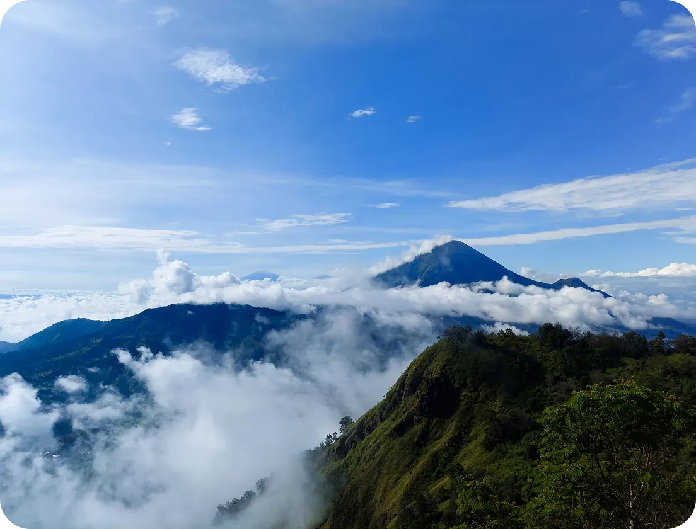

Cerita Kami
Our Story

7Summit Indonesia hadir untuk mengajak para pendaki mengenal dan menjelajahi keindahan pegunungan Indonesia. Kami menghadirkan informasi dan pengalaman pendakian yang aman, berkesan, serta mengutamakan kebersamaan dan kelestarian alam.
7
Puncak Tertinggi
Di 7 pulau besar Indonesia50+
Ekspedisi Sukses
Pendakian & trekking terpandu10.000+
Komunitas
Pendaki berbagi cerita